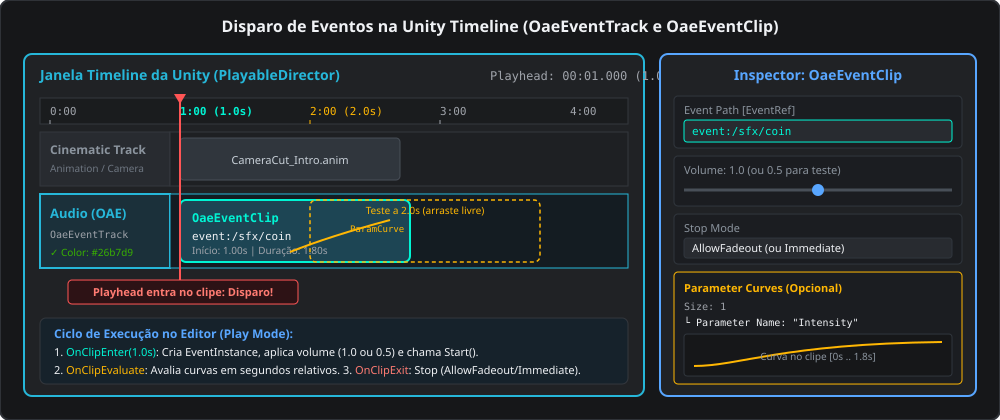
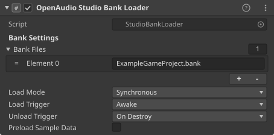
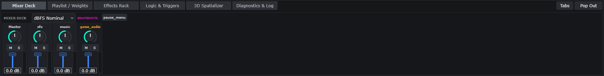

Unity Timeline, bancos sob demanda e mixagem avançada
Use estes recursos quando o projeto precisar sincronizar sons com uma cinemática, carregar áudio conforme a fase ou controlar o roteamento de uma instância.
Um evento disparado pela Unity Timeline
A timeline do Studio descreve o que acontece dentro do evento. Na Unity, um clipe OaeEventClip na faixa OaeEventTrack dispara o evento em um ponto da sequência do jogo. Essa integração é opcional: instale o pacote com.unity.timeline e confirme que a assembly OpenAudio.Runtime tem referência a Unity.Timeline. O OAE_UNITY_TIMELINE é um define condicional do OpenAudio.Runtime.asmdef; a instalação do pacote, sozinha, não substitui a referência de assembly. A configuração base de OpenAudioUnity não inclui Timeline.

OaeEventTrack (destacada em ciano #26b7d9) hospeda clipes OaeEventClip. Quando o Playable Director atinge 1.0 s (ou 2.0 s), a sequência dispara o evento publicado (ex.: event:/sfx/coin). O Inspector lateral permite ajustar volume, modo de parada e curvas de parâmetros em tempo relativo.- Com Audio Manager e banco carregado, prepare uma Timeline Asset ligada a um Playable Director na cena.
- No editor da Timeline, clique com o botão direito na lista de faixas e adicione a faixa Audio (OAE) (
OaeEventTrack). Arraste ou crie um clipeOaeEventClipna faixa. No Inspector do clipe, escolha um evento incluído no banco carregado — por exemploevent:/sfx/coinse publicou o projeto de exemplo — e posicione o clipe em1 s. - Entre em Play Mode e inicie o Director. O evento deve disparar exatamente quando o playhead da sequência entrar no clipe (
OnClipEnter()). Mova o clipe para2 sna régua e confirme que o disparo acompanha a nova posição; teste também o controle Volume do Inspector em1e0.5para confirmar a atenuação de 6 dB. - Com um evento sustentado (como
event:/music/themeouevent:/sfx/charge_sustain_async), compare o campo Stop Mode:- AllowFadeout: Permite que a cauda de release do som termine naturalmente ao cruzar a borda final do clipe.
- Immediate: Corta o áudio instantaneamente ao sair do clipe.
- Para testar Parameter Curves, clique em + em Parameter Curves no Inspector, escreva o nome de um parâmetro (ex.:
IntensityouMasterVolume) e desenhe a curva de animação em segundos relativos ao clipe. Durante a reprodução,OnClipEvaluate()aplica os valores interpolados a cada quadro ao evento ativo.
Carregamento sob demanda

Guarde áudio específico de fase em um banco de conteúdo. Carregue o Master antes dos bancos dependentes. Use um único OaeBankReferenceManager por sistema. Cada AcquireBankAsync bem-sucedido pede um ReleaseBank com a mesma chave. Duas aquisições da mesma chave compartilham a carga. Depois da última liberação, o banco pode ser descarregado. Pare e libere suas instâncias antes de soltar a última referência.
using var bancos = new OaeBankReferenceManager(sistema);
var banco = await bancos.AcquireBankAsync("bonus", _ =>
System.Threading.Tasks.Task.FromResult(new OaeBankPayload
{
BankBytes = System.IO.File.ReadAllBytes(caminhoDoBanco),
ExpectedCrc32 = crcDoCatalogo
}));
try
{
// Enquanto esta referência estiver ativa, use os eventos do banco.
}
finally
{
bancos.ReleaseBank("bonus");
}O exemplo pressupõe um método async na thread principal, com o sistema ativo, o caminho completo e o CRC do catálogo disponível. Para observar a contagem, adquira a mesma chave em dois consumidores e compare GetRefCount("bonus") antes e depois das liberações. A aquisição pode lançar exceções se os bytes forem inválidos ou o CRC divergir. O carregamento síncrono dos bytes no exemplo é apropriado para um banco pequeno de teste.
| Origem | Como fornecer os bytes | Chave de liberação |
|---|---|---|
| Arquivo ou bytes próprios | OaeSystem.LoadBankFile, LoadBankFileAsync ou LoadBankMemory se o jogo gerencia a vida útil diretamente. Use AcquireBankAsync para referência compartilhada e CRC esperado. | A mesma chave de aquisição quando usar o gerenciador. |
| AssetBundle | Importe uma cópia do banco como .bytes para obter um TextAsset, inclua-o no bundle e chame OaeAssetBundleBankProvider.LoadFromAssetBundleAsync com o bundle carregado. | bundle.name + ":" + assetName |
| Addressables | Importe o banco como TextAsset e marque-o como endereçável. Com a assembly resolvendo Unity.Addressables e Unity.ResourceManager e o define OAE_UNITY_ADDRESSABLES, chame OaeAddressablesBankProvider.LoadFromAddressablesAsync. | O endereço do TextAsset. |
Os dois provedores prontos passam os bytes ao gerenciador. Para exigir um CRC específico do catálogo, passe-o em um OaeBankPayload próprio. Faça o primeiro teste com os bancos locais do exemplo e examine o Console ao configurar pacotes opcionais.
Envios, retornos e efeitos por faixa

Um send envia parte do sinal a um retorno. Um insert processa o sinal que já passa naquele canal. Por exemplo, duas fontes podem compartilhar um retorno de reverberação. No pós-fader, abaixar a fonte reduz também o envio. No pré-fader, o nível de envio independe desse ajuste.
var fonte = sistema.GetBus("bus:/sfx");
var retorno = sistema.CreateReturnBus("ambiente");
retorno.AddEffect(OaeEffectType.Reverb);
fonte.AddSend(retorno, 0.25f, OaeEffectPosition.PostFader);
// Durante a reprodução, compare o sinal seco com o retorno mudo.
fonte.SetSendMute(retorno, true);
fonte.SetSendMute(retorno, false);
// Ao encerrar o teste, retire o envio antes de liberar o retorno.
fonte.RemoveSend(retorno);
retorno.Release();Um roteamento que retorna a si mesmo é rejeitado. Para ajustar a primeira faixa de uma única instância, obtenha instancia.GetTrackBus(0) e mude seu ganho ou adicione um efeito. Compare duas instâncias do mesmo evento e altere apenas uma delas. O barramento de faixa pertence à instância. Use-o enquanto ela existir.
Recursos de autoria avançada e API nativa
| Recurso | O que observar |
|---|---|
| Instrumento assíncrono | Um som pode atravessar um salto de timeline. Ao retornar ao ponto de disparo, as políticas permitem sobrepor, ignorar enquanto toca ou cortar a voz anterior. Compare uma cauda longa com uma região de loop curta. |
| Região de parâmetro | O runtime pode ativar um instrumento quando um parâmetro entra em um intervalo. Imagine um motor auxiliar ativo entre 0,6 e 1. Compare valores logo abaixo e acima de 0,6. |
| Programmer Instrument e Audio Table | Para a rota gerenciada pela Unity, publique uma chave de Programmer na audio_table associada a um sample_id válido; o runtime resolve esse som ao reproduzir o evento. A rota alternativa usa callbacks nativos CREATE_PROGRAMMER_SOUND e DESTROY_PROGRAMMER_SOUND para escolher e liberar áudio personalizado. O pacote Unity declara os tipos de callback, mas seu EventInstance gerenciado não expõe esse fluxo de criação; callbacks personalizados exigem integração nativa. |
| Loops sobrepostos e pitch da timeline | O runtime pode escolher loops sobrepostos por prioridade e usar a menor região em empate. Com o modo de pitch temporal ativo, +12 semitons dobram o avanço da timeline. Use marcadores para comparar o tempo transcorrido. |
Programmer Instrument: Tabela Publicada vs. Callbacks Nativos
O Programmer Instrument permite que o som reproduzido seja determinado dinamicamente no jogo em vez de fixado na autoria. O OpenAudio oferece duas rotas com complexidades e pré-requisitos distintos:
| Característica | Rota 1: Tabela de Áudio Publicada (Gerenciada / Studio + Unity) | Rota 2: Callbacks Nativos (C ABI de Baixo Nível) |
|---|---|---|
| Mecanismo | O instrumento aponta para uma chave da audio_table (ex.: coin_demo). O compilador do Studio empacota a tabela no catálogo binário (.bank e catalog.json) mapeando a chave ao sample_id do WAV. |
O motor intercepta o disparo na timeline chamando um callback C (CREATE_PROGRAMMER_SOUND) que entrega o handle do som alocado dinamicamente pelo código do usuário. |
| Uso no Jogo | Totalmente automático no C# de alto nível: sistema.PlayOneShot("event:/sfx/dialogo") ou GetEvent(...).CreateInstance(). O motor C++ resolve e decodifica o sample da tabela diretamente. |
Exige implementar ponte C/C++ ou P/Invoke para oae_event_instance_set_programmer_callback, alocando o handle nativo OaeSound com oae_sound_create e liberando em DESTROY_PROGRAMMER_SOUND. |
| Suporte no Pacote Unity | Totalmente suportado via com.openaudio.core, sem necessidade de código nativo ou plugins adicionais. |
Apenas nativo: os delegates existem em C#, mas EventInstance.cs gerenciado não expõe a fábrica de ponteiros de som nativos. |
| Caso de Uso Típico | Localização de diálogos empacotados, variações de som conhecidas na publicação, skins de efeitos sonoros. | Áudio procedural em tempo real, streaming de arquivos externos fora de bancos, bibliotecas externas de síntese de voz (TTS). |
Esses exemplos descrevem capacidades do runtime. Para usar cada recurso a partir do Studio, confirme a presença do campo no editor, o valor exportado e o comportamento no banco final. O teste desta seção precisa de um banco publicado com o evento escolhido; a Unity Timeline também precisa estar instalada e referenciada pela assembly do pacote.
Pré-requisitos das integrações opcionais
O pacote base com.openaudio.core funciona sem dependências externas. As integrações abaixo adicionam capacidades adicionais e exigem pré-requisitos específicos de montagem:
| Integração Opcional | Pacotes Unity Necessários | Referência em Assembly (.asmdef) | Defines de Compilação | Configuração do Projeto |
|---|---|---|---|---|
| Unity Timeline | com.unity.timeline (via Package Manager) |
Adicionar "Unity.Timeline" no array references de OpenAudio.Runtime.asmdef |
OAE_UNITY_TIMELINE (gerado via versionDefines) |
Playable Director com Timeline Asset contendo OaeEventTrack e OaeEventClip. |
| AssetBundles | com.unity.modules.assetbundle (módulo nativo da Unity) |
Nenhuma referência extra necessária | Disponível nativamente no runtime | Importar o arquivo .bank como .bytes para gerar TextAsset empacotável em bundles. |
| Addressables | com.unity.addressables e com.unity.scriptablebuildpipeline |
Adicionar "Unity.Addressables" e "Unity.ResourceManager" em references |
OAE_UNITY_ADDRESSABLES (via versionDefines) |
Banco importado como .bytes, marcado como Addressable e chamado via OaeAddressablesBankProvider. |
| Física 2D / 3D (Doppler e Velocidade) | com.unity.modules.physics e com.unity.modules.physics2d |
Módulos nativos integrados ao asmdef base | OAE_UNITY_PHYSICS, OAE_UNITY_PHYSICS2D |
Adicionar Rigidbody ou Rigidbody2D ao mesmo GameObject do StudioEventEmitter para cálculo automático de velocidade. |
| Programmer Callbacks Nativos | Nenhum pacote Unity | Não acessível pela API C# pura de com.openaudio.core |
N/A (C ABI nativa) | Implementação de ponte C/C++ vinculada a oae_audio.dll para registrar callbacks e gerenciar handles de OaeSound. |
Escolha a forma de integração
| Necessidade | Fluxo inicial | Como verificar |
|---|---|---|
| Banco pequeno presente desde o início. | Studio Bank Loader em StreamingAssets. | Carregue antes do primeiro disparo e confirme o caminho publicado. |
| Duas partes da fase usam o mesmo banco de bônus. | Gerenciador de referências com uma chave comum. | Adquira duas vezes, solte uma e confira o segundo consumidor. Solte a última após parar suas instâncias. |
| Disparo em uma cinemática. | Faixa de evento da Unity Timeline, com banco pronto antes do Director. | Mova o clipe de 1 s para 2 s e observe o instante do disparo. |
| Duas fontes precisam da mesma reverberação. | Envios para um retorno compartilhado. | Silencie um envio por vez. Compare a contribuição do retorno com o sinal direto. |
Termos de integração avançada
- Playable Director
- Componente Unity que executa uma sequência Timeline.
- TextAsset
- Ativo Unity que expõe os bytes importados de um arquivo.
- Contagem de referências
- Número de consumidores que mantêm uma carga compartilhada ativa.
- Send / Return
- Envio paralelo de áudio e barramento que recebe esse sinal.